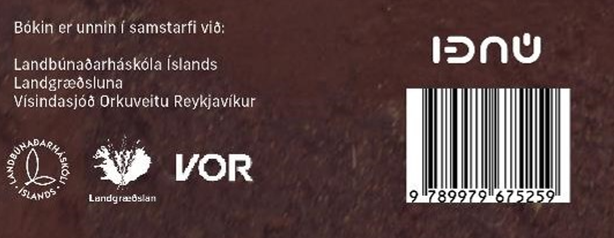
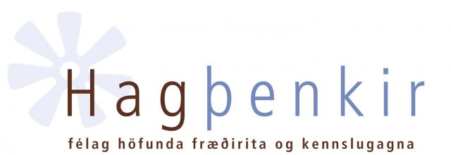

Mold ert þú – jarðvegur og íslensk náttúra
Moldin fæðir og klæðir jarðarbúa og hún miðlar jafnframt ferskvatni um vistkerfi. Skilningur á náttúrunni og hvernig hún bregst við álagi vegna athafna mannsins á jörðinni krefst þekkingar á jarðvegi.
Jarðvegur á Íslandi er einstakur á heimsvísu, frjór en viðkvæmur, því aðstæður fyrir þróun hans hérlendis eru afar sérstakar. Grunnur að jarðvegsfræði er lagður í upphafi bókarinnar og síðan er íslenskum jarðvegi gerð sérstök skil.
Í „Mold ert þú“ er útskýrt af hverju áhrif frosts á náttúruna eru meiri hérlendis en þekkist annars staðar. Hinum einstöku sandauðnum og áhrifum þeirra á öll vistkerfi landsins er einnig gefinn sérstakur gaumur.
Leitast er við að opna augu lesandans fyrir eðli og ástandi vistkerfa – þar sem moldin gegnir lykilhlutverki ásamt gróðurþáttum. Ferli hnignunar eru skýrð sem og þeir þættir sem skilgreina ástand lands. Í bókinni er dregin upp skýr mynd af stöðu íslenskra vistkerfa sem víða eru í afar hnignandi ástandi.
Fjallað er um rætur landhnignunar og rangrar landnýtingar hérlendis sem annars staðar, en þeirra er m.a. að leita í lögum, styrkjakerfi, samdaunasýki o.fl. þáttum.
Að lokum er vikið að vistheimt – endurheimt vistkerfa – sem er e.t.v. mikilvægasta viðfangsefni mannkynsins nú á dögum.
 
Hlekkir: